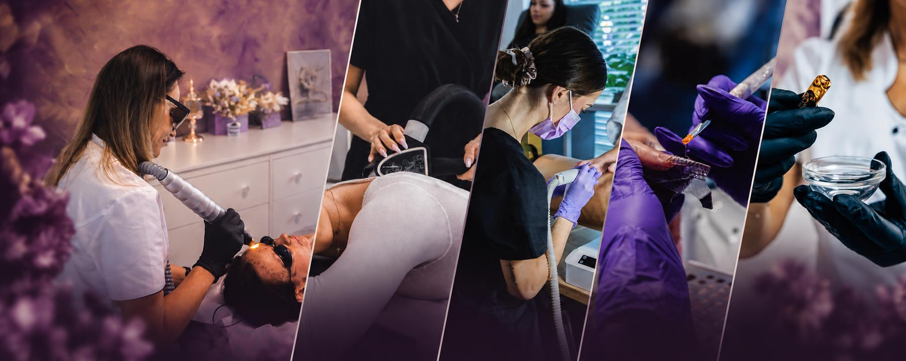
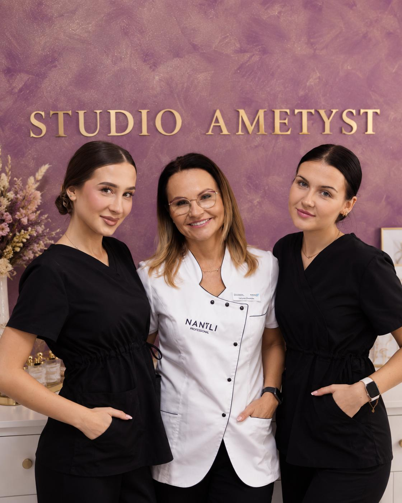
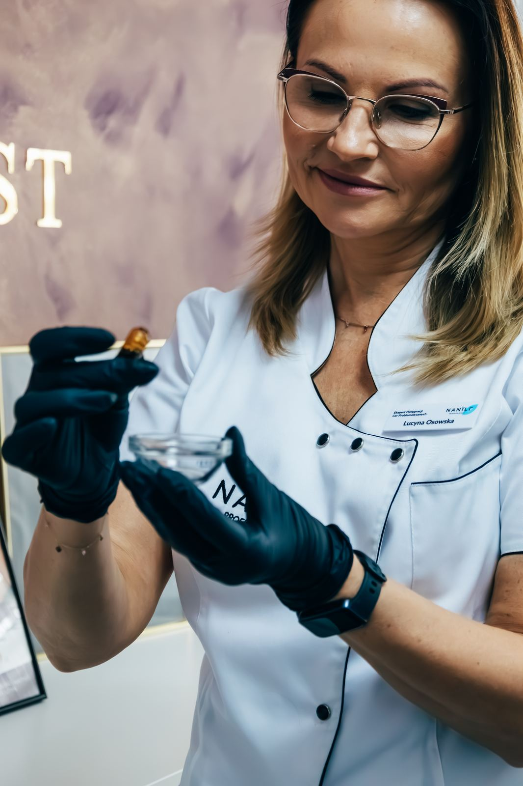
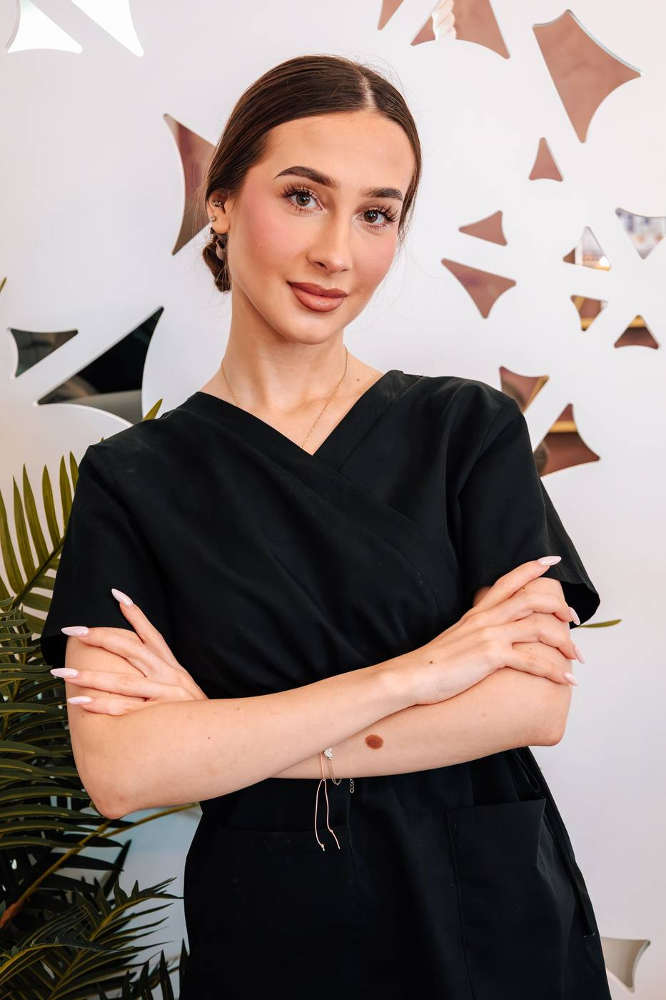
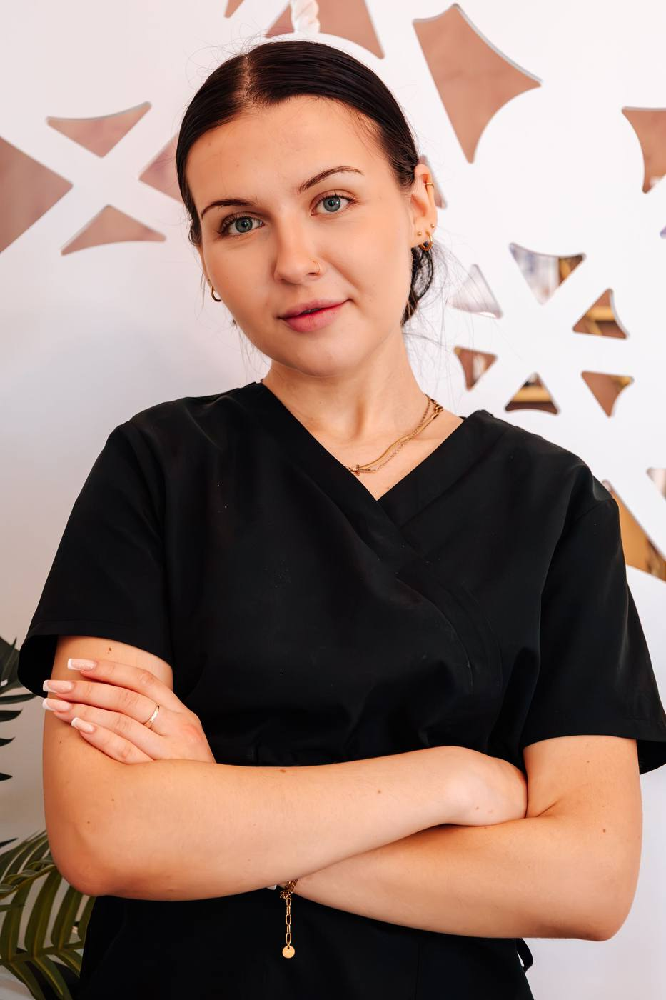

Gabinet kosmetyczny · Olsztyn, ul. Kajki 5
Piękno zaczyna się od dobrego wyboru.
Ametyst to studio kosmetyczne w Olsztynie, w którym profesjonalna pielęgnacja spotyka się z miejscem, do którego po prostu chce się wracać. Manicure, pedicure i nowoczesne zabiegi kosmetologiczne dobierane do Ciebie, Twoich potrzeb i efektu, którego oczekujesz.
Od 2012 roku
Poznaj Ametyst od środka!
Ametyst tworzą ludzie, którzy naprawdę lubią to, co robią. Łączymy doświadczenie, wiedzę i dbałość o detale, ale równie ważne jest dla nas to, jak czujesz się podczas wizyty. Chcemy, żebyś mogła przyjść do nas z konkretnym problemem, pomysłem albo po prostu potrzebą zadbania o siebie, a my zajmiemy się resztą. Bez przypadkowych rozwiązań i bez działania według jednego schematu. Poznaj nasz zespół i osoby, którym możesz powierzyć swoją skórę, ciało, dłonie i dobre samopoczucie.
Czym dokładnie się zajmujemy? Od klasycznego manicure po zabiegi liftingujące i depilację laserową, endermologię czy kurację laserową na naczynka i przebarwienia — zależy nam, żeby każda wizyta była dobrze zaplanowana, a efekt zgodny z tym, co obiecujemy.

Czym się zajmujemy
Dbamy o Ciebie kompleksowo!
W Ametyście łączymy kosmetologię, nowoczesne technologie i profesjonalną pielęgnację. Dbamy o kondycję skóry, pomagamy w pracy z rumieniem, naczynkami czy przebarwieniami oraz wykonujemy zabiegi wspierające jej jędrność i regenerację. W naszej ofercie znajdziesz również depilację laserową, manicure i pedicure. Każdą usługę dobieramy indywidualnie do Twoich potrzeb, oczekiwań i efektu, który chcesz osiągnąć.
Stylizacja paznokci i stóp
Manicure klasyczny, hybrydowy, żelowy, przedłużanie i zdobienia. Pedicure klasyczny, kwasowy i hybrydowy.
Zabiegi na twarz
Konsultacja i pielęgnacja dobrana do potrzeb skóry, peelingi, dermapen, mezoterapia igłowa, kwas hialuronowy.
Kuracje laserem
Depilacja laserowa — trwała redukcja owłosienia, bezpiecznie i systematycznie.
Zabiegi na ciało
Endermologia, karboksyterapia i lipoliza iniekcyjna — pojedynczo lub w karnetach.
Kto konkretnie o Ciebie zadba w Studio Ametyst?
Zespół Studio Ametyst

Lucyna
Założycielka Ametystu, osoba, dla której najważniejsze są świadoma pielęgnacja, dobrze dobrane terapie i realne efekty. Łączy doświadczenie z nowoczesnymi technologiami, a do każdej skóry i każdej klientki podchodzi indywidualnie.

Emilia
Specjalistka od pedicure, manicure i pięknych stylizacji paznokci. Dba nie tylko o estetyczny efekt, ale również o komfort i staranne opracowanie dłoni oraz stóp. W pracy stawia na dokładność, estetykę i indywidualne podejście do każdej klientki.

Martyna
Specjalizuje się w manicure oraz zabiegach endermologii. W swojej pracy łączy dokładność i estetykę z troską o komfort klientki. Z Martyną możesz zadbać zarówno o piękne paznokcie, jak i ciało oraz dobre samopoczucie.
Umów się na wizytę
Rezerwacja online przez Booksy lub telefonicznie — jak Ci wygodniej.